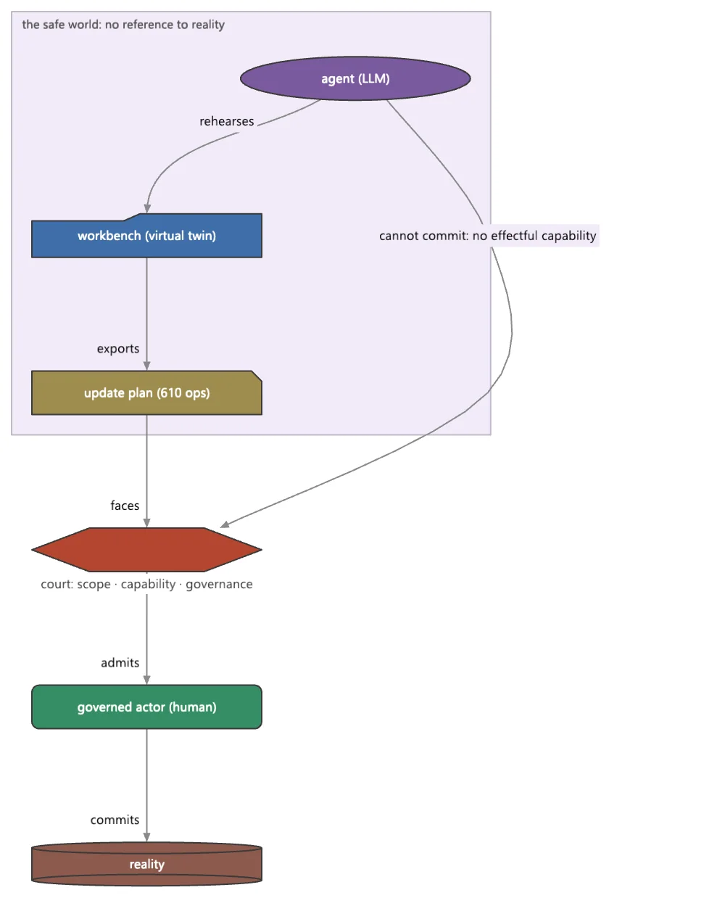

Softanza does not try to build a safe agent. It builds a safe world, and lets ordinary agents work inside it.
That is an inversion of the frameworks the field knows. There, the model picks the tools, plans and orchestrates. Here, a language model may propose and can never act: it holds the capability inference and nothing else, and five invariants proven on the agents' graph make "an LLM cannot act effectfully" a static fact the CI gate checks, not a hope. A composition where a model reaches an action with no guardian between them is judged unsound before anything runs.
An agent is a file: a .pia declaration of what it covers, how undoable its acts are, its schedule, skills and governance, judged at load by a sequence of courts, one refusal per gate, when refusing still costs nothing. At work, it rehearses its changes into a virtual twin of the file system; only a plan leaves the workbench, and a separate committing actor runs it under three gates, scope, capability, governance. The guard proves the sentence: a cycle fires, the disk does not move, the plan carries one operation, and only the in-scope actor makes it real. Time belongs to a Zig loop that publishes a run queue; nothing ever calls back into the agent's language.
Conversation is wise coding: a goal held in a knowledge graph generates the next question from its own gaps, and every answer is checked before it is admitted. The cost of all this is the autonomy the field is famous for, and it is named: no model-driven tool selection, no autonomous planning, no live multi-agent chat, no retrieval wired in yet. The Compass rates four lanes Strong and calls the safe-world binding a category of one.

an agent may propose anything inside the circle; only a person carries a plan across the line. drawn on 2026-10-01 by the site's script tools/areas-figurative.ring, run inside the library at commit 0e72e2e2c · the source(opens in a new tab)
Where it stands
The Softanza Compass's reading: every lane of the area rated against the best of its category, by what the guards prove. Read from the source on 2026-09-16. The Compass's sentences are in English, as it wrote them.
A deliberate inversion of LangChain and AutoGen. Where those are LLM-driven autonomy frameworks — the model picks tools, plans, and orchestrates — Softanza builds a governed, declarative substrate where an LLM only proposes and can never act. Agents are .pia files judged at load; they rehearse into a virtual-filesystem twin and only a committing actor writes reality, under three gates; a capability lattice makes "an LLM cannot act effectfully" a static, provable invariant. It is strongest exactly where the peers are weakest — safety, governance, determinism — and deliberately absent exactly where they lead: LLM-driven tool selection, autonomous planning, live multi-agent chat, and RAG.
The honesty line on the ratings. This tier is heavily guarded and green — the agent loop (determinism proven as a test, the drop-and-count under overflow), the .pia court (one refusal per gate, every one at LOAD), and the safe world (the disk provably does not move until a scoped actor commits). Two caveats: the LLM-model-dependent paths run model-free in CI via SeedAnswer/UseResponder, so the governance is proven but proposal quality is not CI-tested; and stzNarration was renamed to stzTranscript (not a lost capability — the git delete/add pair is the rename).
The one-sentence position. Softanza's agents are the safest, most governable, most declarative of their field — a provably-contained substrate no LLM framework offers — and the deliberate cost of that is the autonomy the field is famous for: LLM-driven tool use, planning, live multi-agent chat and RAG are refused or unbuilt, and closing the gap means adding those as governed proposals rather than autonomous authority.
What a crafter does with it, and what stands out
safe-world binding: a genuine category-of-one
a provable governance graph (five static invariants)
agents as .pia files judged at load
a Zig-owned tick loop with no callback into Haro
What is owed
LLM-driven tool selection, gated
wire RAG into agents
plan negotiation (Receive / Revise)
live multi-agent orchestration
Rethought from first principles
What Softanza kept from what works, and what it rethought, as the library wrote it down in its design documents and narrations.
The Softanza waySoftanza does not try to build a safe agent; it builds a safe world and lets ordinary agents work inside it.
Kept from the best practice
The familiar agent shape is kept: a loop with a goal, tools, memory and skills. The usual vocabulary maps onto it one to one. source(opens in a new tab)
A change is first a plan, validated and reviewed, then executed by another actor with an audit trail. This is the familiar review-before-commit discipline. source(opens in a new tab)
A person stays in the loop. Every refusal can reach a human checkpoint, which keeps its context and expires if nobody answers. source(opens in a new tab)
Rethought
An agent rehearses in a virtual workbench with no wire to reality, so it cannot escape. Only a plan leaves, and a separate committing actor runs it. source(opens in a new tab)
The mind is programmatic by default. A language model is one pluggable faculty that may propose but never act, so no unchecked suggestion becomes an action. source(opens in a new tab)
An agent must declare what it covers and how undoable its acts are. Otherwise it is refused before its first tick, when refusing still costs nothing. source(opens in a new tab)
Softanza asks rather than guesses. The gap between a declared goal and current knowledge generates the next question, and each answer is checked before admission. source(opens in a new tab)
The Softanza way, run
What Softanza does differently in this area, shown by code taken from its narrations and guards, and run for this page.
A composition where a language model reaches an action directly, with no guardian between them, is judged unsound before anything runs.
Softanza
oBad = new stzAgentGraph("mailer-bad")
oBad.AddLLMActor("writer")
oBad.AddEffect("send")
oBad.Proposes("writer", "send")
chk("llm-straight-to-effect is NOT sound", oBad.IsSound() = 0)
chk("multiple invariants fire", len(oBad.Violations()) >= 3)
chk("Explain names the refusal", len(StzFind("REFUSED", oBad.Explain())) > 0)
Output
[OK] llm-straight-to-effect is NOT sound
[OK] multiple invariants fire
[OK] Explain names the refusal
For every lane: what runs in the engine today, the tools it is fair to measure it against, and what is still owed.
01Safe-world binding (sandboxed execution)Strong
In the engine
The differentiator: an agent (stzAgentWorkbench) rehearses file/system changes into a virtual-filesystem twin, then exports one governed GenerateUpdatePlan(). A separate committing actor executes it under three gates — scope, capability, governance — leaving an audit trail. "Build a safe world, and let ordinary agents loose inside it."
Measured against
LangChain (none)AutoGen (none)Semantic Kernel
To complete
Proven: a Cycle() fires, the disk does not move, the plan carries one op, an LLMActor cannot commit, only the in-scope actor makes it real. No mainstream framework has this — a genuine category-of-one.
Agents compose as a colored stzAgentGraph where an llm_actor holds [inference] only. Five statically-proven invariants (no-llm-effectful, effects-guarded, open-text-contained, effects-traced, effects-dominated) feed the one CI gate, and no-llm-effectful is enforced at two doors — graph construction and engine registration — with the same sentence.
Measured against
NeMo GuardrailsLangChain (ad-hoc)Guardrails AI
To complete
A provable governance graph is far beyond the peers' runtime-only guardrails. The "effects-dominated" strengthening (every input→effect path crosses a guardian) is the newest rung.
An agent is a file: a closed, versioned .pia declaration (kind, coverage, reversibility, schedule, skills, governance) — or a .ring program — judged at LOAD by a sequence of courts. A defect is a refusal in the unified finding shape, one per gate (14 refusal codes), before the agent ever runs.
Measured against
LangChain (code)Semantic KernelAutoGen
To complete
Declarative, governed, version-gated agents validated before execution — no peer validates an agent at load like this. A distinctive deployment model (drop a file in a folder, it mounts or is refused).
04Tick / scheduler loopStrong
In the engine
agentloop.zig — Zig owns time, Haro runs Cycle(), and there is no callback into the Haro VM: the loop publishes a schedule (a run queue) rather than invoking. Total order is priority then registration; timer/event/mailbox/manual triggers; an over-full queue drops and counts; the loop states its own coverage at runtime.
Determinism-as-a-test (same sequence → same order, twice) and 15 Zig unit tests. The engine pump is opt-in today — a stated migration state that flips when the last in-tree host declares.
05Structured output (LLM proposals)Solid
In the engine
An llm_actor proposes through stzLLMFunction + stzOutputSchema: a declared structure, compiled to a GBNF grammar, enforced at the sampler so invalid tokens are unemittable. The proposal is validated against the declared shape and written to the agent's own memory — "a candidate, never an effect."
Measured against
LangChain output parsersinstructor / outlinesSK
To complete
Grammar-constrained decoding beats retry-based parsing — the deep rating lives on the Neural tier page; here it is the solid mechanism by which an LLM contributes without acting.
06Conversation managementSolid
In the engine
stzConversation — a goal-driven "wise-coding" loop inside a stzKnowledgeGraph: it holds one accountable stzGoal, generates the next question from the goal's gaps, admits answers through governed Admit, checkpoints refusals, and persists as .zcnv — with optional neural rephrasing.
Measured against
LangChain conversation chainsSK chatRasa
To complete
A distinctive system-led, gap-born dialogue — but deterministic and narrower than a full dialogue manager (no intent classification, no free-form NLU beyond the answer registers).
07Memory & stateSolid
In the engine
stzAgentMemory over a stzKnowledgeGraph: Learn / Recall / Forget / Prove over case-folded (subject, predicate, object) triples, persistable.
Measured against
LangChain memoryAutoGenSK memory
To complete
Graph-backed, provable memory is a nice distinctive — but there is no conversation-buffer / summary / vector memory variety LangChain offers, and no automatic recency/relevance management.
08LLM function & prompt managementSolid
In the engine
stzLLMFunction: typed returns (ReturnsNumber/Boolean/OneOf/Structure), a call budget, retries, goldens (AddGolden/RunGoldens), a template prompt with {input} substitution, and a real GGUF backend (UseResponder / SeedAnswer for model-free tests).
Measured against
LangChain (LCEL / chains)SK functionsDSPy
To complete
A clean single-function abstraction with goldens — but no chain/pipeline ecosystem, and no prompt registry or versioning beyond the template. Narrower than LangChain's composition surface.
Composition-as-proof is elegant, but there is no runtime multi-agent conversation orchestrator (AutoGen's core), the native roster is one-fifth wired, and stzHybridAgent exists only as a graph node, not a class.
10Tools / function-callingPartial
In the engine
A skill's ring:<Function> clause binds a plain Haro function, governed by an execution posture (trusted / external / sandboxed) composed against the agent's reversibility class. Tools are tool nodes with [compute] capability.
No LLM-driven tool selection — the defining feature of LangChain/AutoGen tool agents. Binding is declarative and posture-gated; which tool runs is decided by the deterministic agent, not the model. A deliberate refusal, but a gap against the peers.
11Planning & reasoningPartial
In the engine
Deterministic perceive→decide→act to a fixpoint (stzPIAgent.Pursue, RunToQuiet), and gap-driven slot-filling via stzGoal.
Measured against
SK plannersLangChain agents (ReAct)AutoGPT
To complete
No LLM-driven planning — no ReAct, no stepwise / Handlebars planner. Reasoning is a deterministic fixpoint; the planner agent is reserved, not wired. Autonomous multi-step reasoning is the peers' headline and is absent here by design.
12RAG / retrievalEmerging
In the engine
Not wired into the agent tier. The nearest tie-in is stzAgentMemory over the knowledge graph; the semantic index (stzSemanticIndex, embeddings) lives on the Neural tier and is not connected to agent proposal or memory.
Measured against
LangChain (RAG)LlamaIndexSK memory connectors
To complete
Retrieval-augmented generation — a headline of every peer — is absent from agents. The embedding retrieval to build it already exists one tier over; it just isn't connected.
What is owed, in the order of return
The gaps, ordered by what they bring and not by their size; value is the effect on the library's reach, effort an engineer's reading.
Tier A — the peers' strengths, governed
LLM-driven tool selection, gated
Let an llm_actor propose which tool to call (a ReAct-style loop), with a deterministic pi-gate approving the commit. This adds LangChain's core capability without surrendering the "LLM never acts" invariant — proposal, not authority.
Value · highEffort · medium
Wire RAG into agents
Connect the existing stzSemanticIndex to agent memory and LLM proposals, so an agent can retrieve before it proposes. The retrieval engine ships one tier over; this is a wiring job with high visible return.
Value · highEffort · medium
Tier B — finish the owed surfaces
Plan negotiation (Receive / Revise)
The agent's side of the plan handshake — Receive(aIssues) / Revise() — so a rejected update plan comes back for repair instead of just failing. Named as owed in the design doc.
Value · mediumEffort · medium
Live multi-agent orchestration
A runtime message-passing / group-chat layer over the proven graph — turning static composition into live collaboration, the way AutoGen runs a conversation between agents.
Value · mediumEffort · medium
Wire the roster & build stzHybridAgent
Four of five native agents are reserved and stzHybridAgent is only a graph node. Wiring them (and the hybrid class) turns the honest one-fifth roster into a working fleet.
Value · mediumEffort · low
Tier C — evaluation & exploration
stzAgentEvaluation — the examination hall
A structured harness to score an agent's proposals against expectations (beyond goldens on a single LLM function). Named as owed; the piece that makes agent quality measurable, not just governed.
Value · mediumEffort · high
Branch-per-hypothesis exploration
BranchFrom / CompareBranches — let an agent rehearse several futures in parallel workbenches and compare, using the safe-world twin that already exists. A natural, distinctive extension of the rehearse model.
Value · mediumEffort · high
Governed autonomous planning
An LLM planner that proposes a multi-step plan, re-validated and committed step-by-step under the three gates — the peers' autonomy, made auditable. The reserved planner agent's eventual home.
Value · mediumEffort · high
The design, as the library wrote it (2)
The design documents of this area, read in the repository at commit 4a184e6f0: what each one is, its outline, and the link to the whole text.
Softanza Intelligence Architecture
2,550 lines · 8 sections · written on 2026-07-13, revised on 2026-09-06
The single roadmap governing intelligence work, from the author's directive: intelligence derives new knowledge from existing knowledge held as a governed graph, hence six laws, five foundations, a module map, an audited current state and one path R1 to R8.
The outline
0. The Author's Intent, Distilled
1. The Six Laws (the pattern of thinking, made explicit)
2. The Target Module Map
3. Current-State Audit (2026-07-13)
4. The Text-Processing Battlefield: Softanza vs NLTK
5. The Five Foundations (rounds 1+2, 2026-07-13; they run UNDER all pillars)
6. THE ONE ROADMAP (refactor + enhance in the same movement)
7. R8 -- the SCALE plane (clustering, re-based on the resident engine)
A short strategy essay: Softanza will not build safe agents but a safe world, where an agent lives inside a virtual system, only a plan leaves it, and deterministic committing actors execute plans within a declared scope, so agents are reviewed rather than trusted.
The narrations the library wrote about this area, each run block by block before it was published here.
Smart Adverb Generation in Softanza2025 · feature essayThe Softanza library introduces an intelligent Adverb() function that transforms adjectives and nouns into contextually appropriate adverbs using a priority-based rule system.
From "Quick" to "Quickly": Programmatic Adverb Formation2025 · feature essaySoftanza Adverb() function transforms (any) word into its proper adverbial form, handling English morphology complexities for programmers generating natural language messages.
Agents That Cannot Hurt You2026 · paradigm essayEveryone building agents in 2026 is handed roughly the same shopping list: a Python project, a model provider, a graph framework, a vector store, a set of tools with typed schemas, a tracing service, and a chapter of safety advice — allowlists, sandboxes, h...
The classes of this area (18)
Each class leads to its reference page: its methods, each with an example run.